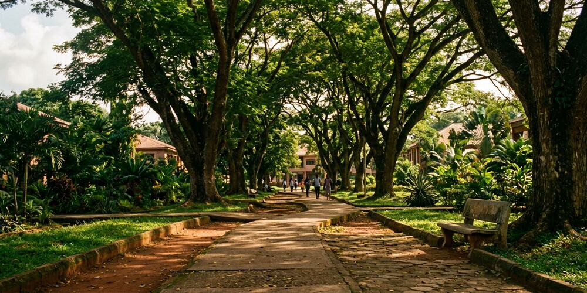
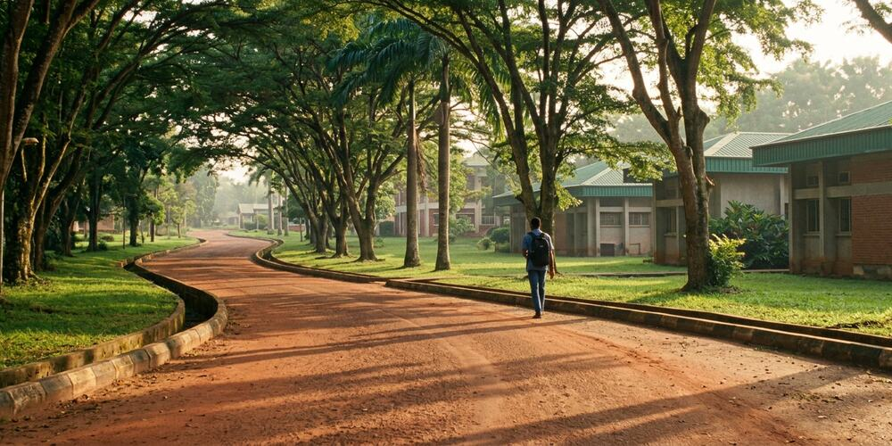

Under the canopy
Mature trees are planted along the main routes, and the shade they throw is the first thing students mention about being outdoors here.
Benson Idahosa University · Benin City, Edo State
A green, shaded campus on Agboma Street in Ogogugbo, Benin City — and everything you need to find it: what the grounds are like, when the gates close, and the fastest way to get there from the city.
01 — The campus
Benson Idahosa University — BIU — stands on 15 Agboma Street in Ogogugbo, Benin City, Edo State: low academic blocks set among mature trees, with red-earth and paved routes running between them.
Students put it plainly. The grounds are serene and kept well, the bins sit where people actually walk, and the trees are what make a Benin afternoon bearable. The same reviews are candid about the internal roads, which work but are not always well maintained. Plan for that: arrive early, give yourself a few extra minutes, and walk further than you think you need to.
02 — On campus
Six things worth knowing before you set off, written from the campus as students describe it.

Mature trees are planted along the main routes, and the shade they throw is the first thing students mention about being outdoors here.
Lecture halls, tutorials and the corridors that link them make up the shape of the campus day — most of it spent moving from one to the next.

An internal road network links the blocks across campus. Reviews are candid that the surfaces need maintenance — allow extra time on the rougher stretches.
03 — In their words
The atmosphere is serene enough for learning, neat (with waste-bins in strategic locations) and shades (tress) that can protect you from the scorching sun. The road network within the school is ok but no proper maintenance.
Biu is a great uni to attend.. It made me who I am today and the lecturers are simply awesome. They are always there to help you out in your time of need
Reviews quoted verbatim, including their original spelling.
04 — Plan your visit
The campus and its offices close at 4 pm, so build the day around that. Times can move around holidays and exam periods — the live listing on Google Maps is the one to trust on the day you travel.
Hours as listed on Google Maps. No full weekly timetable is published for this campus.
Where
15 Agboma St, Ogogugbo
Benin City 300102, Edo
Nigeria
Opening hoursOpen · Closes 4 pm
Open the campus in Google Maps
Map loads from Google on request. Open in Maps ↗